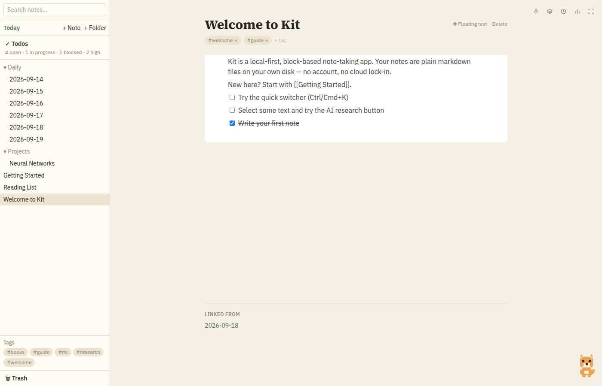
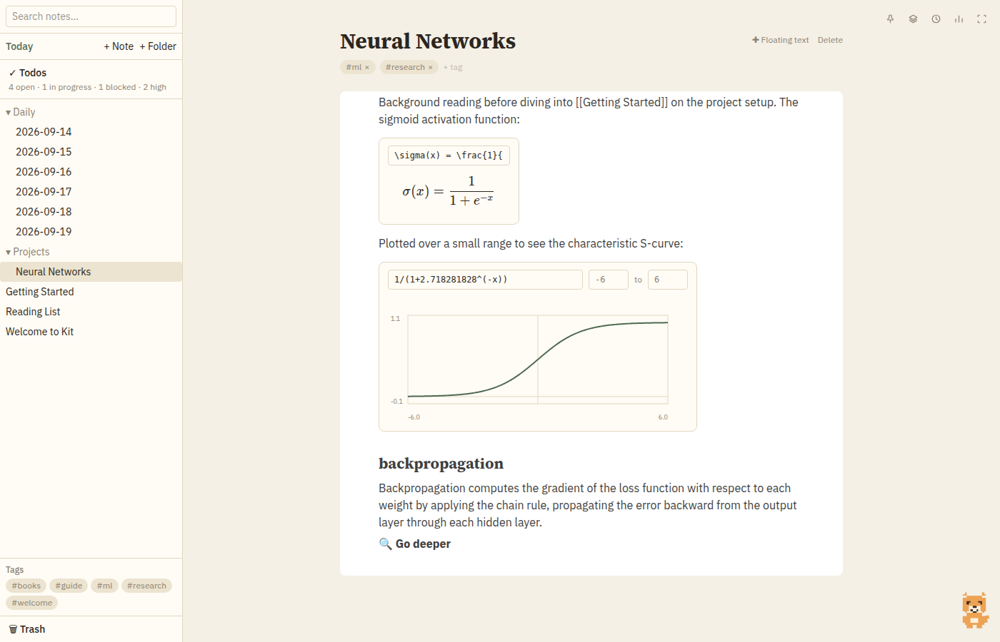
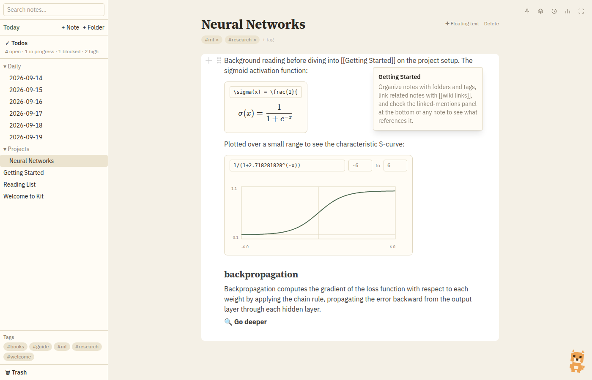
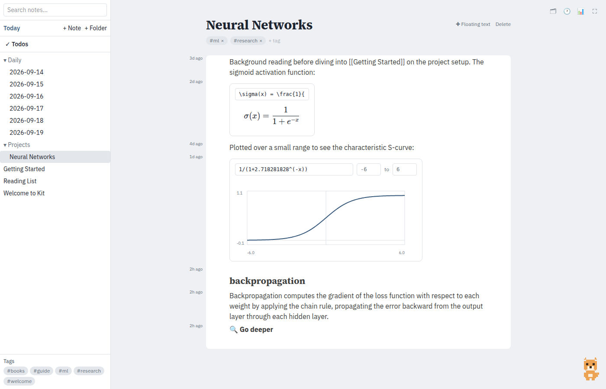
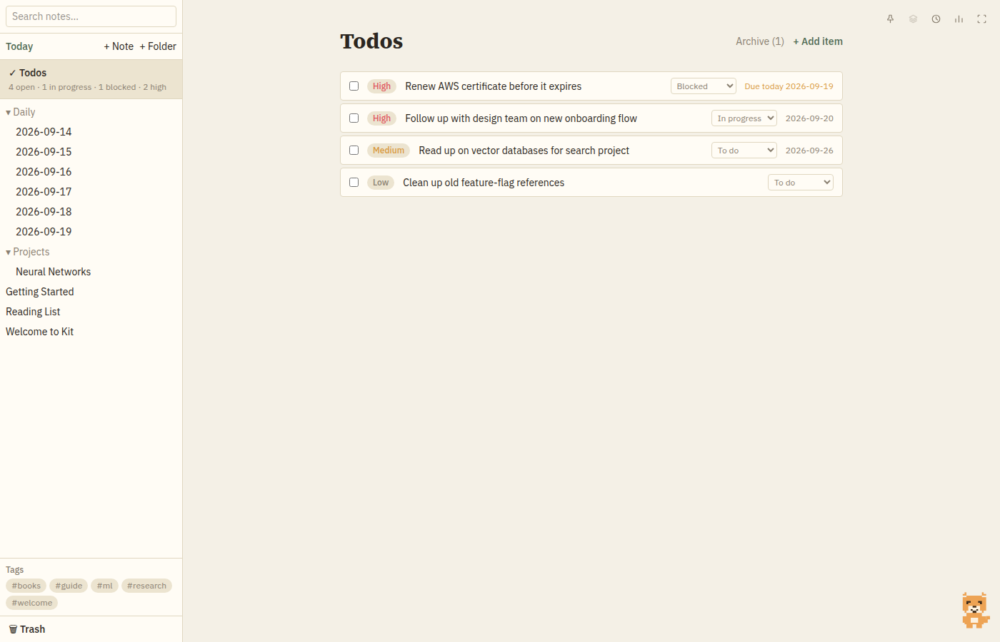
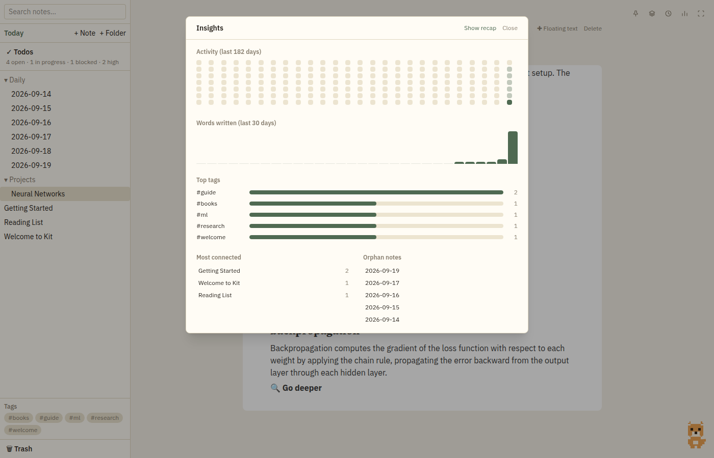

Kit is a local-first, block-based note-taking app. Every note is a plain markdown file on your own disk — no account, no lock-in, no cloud dependency getting between you and what you wrote.

Every note is .md on disk. If Kit disappeared tomorrow, your notes wouldn't.
Write an equation, see it rendered with KaTeX. Graph a function of x and Kit samples it safely — no eval(), arbitrary note content is never executed as code — and draws the curve. Both save as plain fenced code blocks, so the raw file stays readable outside Kit.

Type [[Note Title]] to link to another note, creating it on the spot if it doesn't exist. Every note shows what links back to it. Hover a link instead of clicking it and a preview pops up with the linked note's content — check what a term means without leaving where you are.

A git-blame-style gutter shows when each block was last touched. Beyond that, Kit keeps a rolling history of full snapshots for every note — browse past versions and restore one with a click, without erasing anything.

A Jira-style vault-wide list: status, priority, deadlines, and its own rich notes per item, using the same block editor. Marking something done archives it rather than deleting it — nothing you tracked is ever really gone.

An activity heatmap, word-count trends, top tags, and note connectivity — click any day to see exactly what you wrote. A small desk buddy reacts to what you're doing and delivers a short recap of the week, all computed locally.
